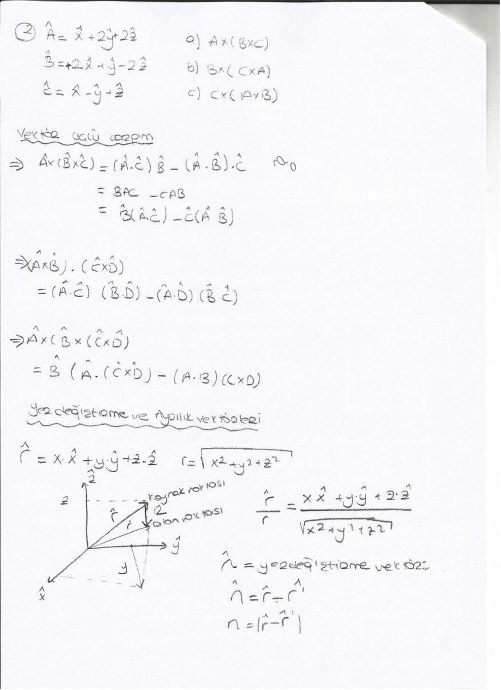
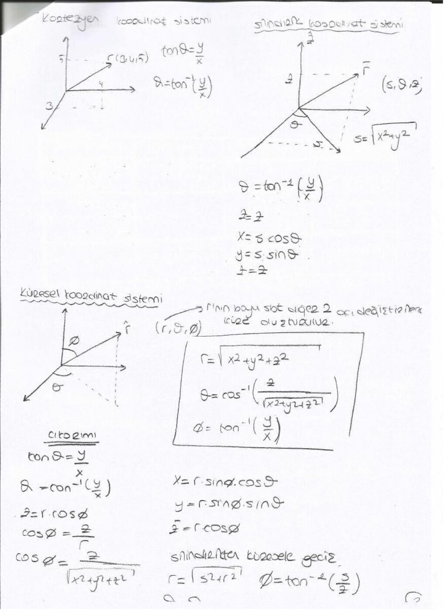

· EEM224
EEM224 Elektromanyetik I: Vektör İşlemleri ve Koordinat Dönüşümleri: Arkadaş Notu
EEM224 – Elektromanyetik I · · 17.10.2026
Bu yazı, bir arkadaşın ders notu üzerinden hazırlandı; kişisel bilgiler çıkarıldı. Tarih belgede yıl içerecek biçimde belirtilmemiştir. Başlıklar, temel formüller ve örnek sonuçları metne aktarıldı. İsimsiz dosya adıyla yeniden oluşturulan PDF yazının sonunda indirilebilir.
Vektör işlemleri
Toplamada üçgen veya paralelkenar yöntemi kullanılır. Vektörü skalerle çarpma büyüklüğünü değiştirir; skaler negatifse yönü de tersine döner. A − B = A + (−B).
A · B = |A||B| cosθ. Sonuç skalerdir. Dik vektörlerin nokta çarpımı sıfırdır. A · A = |A|².
A × B = â_n |A||B| sinθ. Sonuç iki vektörün oluşturduğu düzleme dik bir vektördür; yönü sağ el kuralıyla bulunur. A × B = −B × A.
Kartezyen birim vektörler için â_x × â_y = â_z, â_y × â_z = â_x, â_z × â_x = â_y; ters sıralamada işaret değişir. Aynı birim vektörün kendisiyle çapraz çarpımı sıfırdır.
Bileşenlerle hesap
A = A_x â_x + A_y â_y + A_z â_z.
| A | = √(A_x² + A_y² + A_z²), â_A = A/ | A | . |
|---|
A · B = A_x B_x + A_y B_y + A_z B_z.
A × B = (A_y B_z − A_z B_y)â_x + (A_z B_x − A_x B_z)â_y + (A_x B_y − A_y B_x)â_z.
Notta A = â_x + â_y, B = â_x + 2â_y − 2â_z ve C = â_y + 3â_z seçilmiştir. A × B = −2â_x + 2â_y + â_z; |A × B| = 3 ve buna paralel birim vektör (−2â_x + 2â_y + â_z)/3 olur.
Üçlü çarpım ve konum vektörü
A × (B × C) = (A · C)B − (A · B)C.
A · (B × C) = (A × B) · C.
Bir noktaya ait konum vektörü r = xâ_x + yâ_y + zâ_z, büyüklüğü r = √(x²+y²+z²) ve yönündeki birim vektör r/r'dir. İki nokta arasındaki yer değiştirme R = r₂ − r₁ olarak bulunur.
Kaynakta (2,8,7) ile (4,6,8) noktaları için −2â_x + 2â_y − â_z yönünde, büyüklüğü 3 olan fark vektörü hesaplanmıştır. Hangi noktadan hangisine yönelindiği işareti belirler.

Koordinat dönüşümleri
Silindirik koordinatlarda (s,φ,z): x = s cosφ, y = s sinφ, z = z; s = √(x²+y²).
Küresel koordinatlarda (r,θ,φ): x = r sinθ cosφ, y = r sinθ sinφ, z = r cosθ.
r = √(x²+y²+z²), θ = arccos(z/r). Silindirik ve küresel sistemler arasında s = r sinθ, z = r cosθ.
Not: Kaynak farklı sayfalarda θ ve φ açılarını farklı anlamlarda kullanıyor. Burada dönüşümler yazılırken θ kutupsal, φ azimut açısı olarak açıklandı. Tek başına arctan(y/x), bölge bilgisini vermez; x ve y işaretleri de dikkate alınmalıdır.
